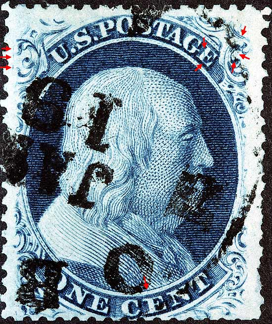
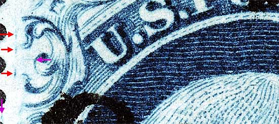
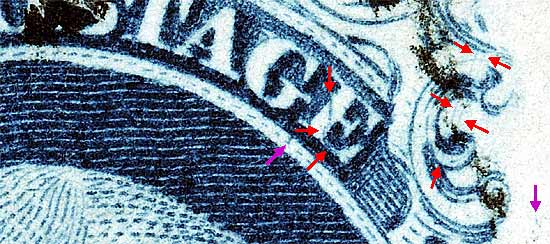
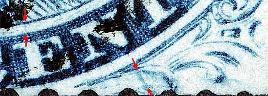
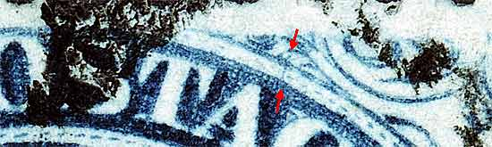
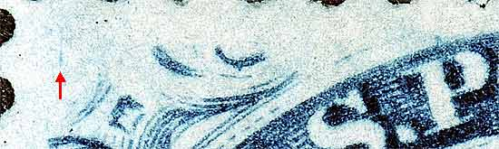
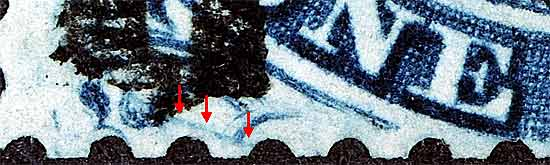

| 1¢ Franklin Issue of 1857-61, PLATE 5.
Pos 64R5, (Scott #24 var) |
| Scott #24 Blue, Type Va, Relief C Issued only perforated. |
|  |
| Figure 1. (Below) The plating diagrams show these marks closer to Ornaments A/B than they really are. The violet arrows are marks not illustrated in the plating diagrams but have been confirmed as constant.
 |
| Figure 2. (Below) The most definitive feature of this position is the impressive "CURL" in the "E" of POSTAGE. Also see Position 23R5 for another entry of this CURL. Several diagonal plate scratches can be seen in Ornament L as illustrated in the plating diagrams. The violet arrow to the right of Ornament M has been confirmed as constant.
 |
| Figure 3. (Below) A faint vertical dash of color above the "E" of CENT as illustrated in the plating diagrams. This mark is part of the "E of CENT curl " and appears on a number of other positions besides 64R5. It started on 65R5 and shows on at least 65R-24R-64R-23R-63R-22R-62R-21R-61R-30L-70L-29L. The blurry dash cutting across the right scroll is not illustrated in the plating diagrams but has been confirmed as constant.
 |
| Figure 4. (Below) A faint line of color not illustrated in the plating diagrams but confirmed as constant.
 |
| Figure 5. (Below) A vertical line of color not illustrated in the plating diagrams but confirmed as constant.
 |
| Figure 6. (Below) A blur of color not illustrated in the plating diagrams but confirmed as constant.
 |
| DISCLAIMER and COPYRIGHT INFORMATION: Thanks for visiting this site. I hope you learn something new as we are making new discoveries all the time. You, the visitor, have my permission to link to my pages and to share the INFORMATION with others. The images themselves fall under the fair use guidelines established by the United States Congress and Copyright law. Basically contact us before using. I also ask in return that you send me an e-mail if I have made a mistake, or have made some other technical blunder that in my rush to put these pages up would cause the visitor confusion. Please also visit my other website at www.slingshotvenus.com. and support the live music arts. While your there, be sure to purchase our music. There are not many philatelic rock stars around and we need all the help we can get. :-) I can be reached at: nerdman@ix.netcom.com |